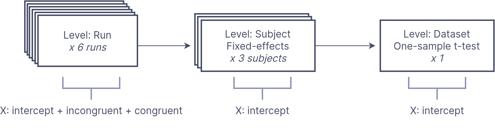

Representing multi-stage neuroimaging models#
The statistical analysis of neuroimaging data typically occurs across distinct stages of analysis, with parameter estimates from lower levels of analysis propagating to higher levels for subsequent analysis.
For example, in fMRI it is common to first fit a design matrix to run-level time series followed by a fixed-effects model to combine estimates at the subject-level. Finally, a dataset-level (or “group level”) random-effects one-sample t-test can be performed to estimate population level effects. At each level of the analysis, we need to know which image inputs correspond to which design matrix, and more how to keep track of and combine outputs from the previous level at the current level of analysis.
BIDS Stats Models proposes a general machine-readable document
to describe multi-stage neuroimaging analyses in a precise, yet flexible manner.
We accomplish this by defining a graph composed of Nodes representing each level of the analysis
and Edges which define the flow of data from one Node to another.
Within each Node we specify
a Model to estimate,
and at least one Contrast
to define the computed outputs of each Node.
Within each node we also specify how to group the incoming inputs
into analysis units using the GroupBy directive.
A simple example#
In a Simon task, participants were scanned for 2 runs and asked to indicate whether a diamond that was presented to the left or right of a central fixation cross was green or red. There were two conditions: color-spatial congruent and incongruent trials.
A basic analysis of this task is to determine which regions showed greater activity for incongruent versus congruent trials, across all participants.
We can perform this analysis by first estimating a run-level timeseries model for “Incongruent” and “Congruent” trials–separately for each individual run. We then compute a contrast comparing Incongruent > Congruent (IvC) trials.
Next, we pass the resulting statistical maps for the contrast to a subject-level estimator, which computes the average IvC effect for each subject separately.
Finally, we pass the resulting estimates to a dataset-level estimator, which conduts a one-sample t-test across all of the subject estimates for the IvC contrast.
Let’s visualize this model for 3 participants:

We can formally represent this analysis as BIDS Stats Model:
{
"Name": "Simon IvC",
"BIDSModelVersion": "1.0.0",
"Input": {"subject": ["01", "02", "03"], "task": "simon"},
"Nodes": [
{
"Level": "Run",
"Name": "run_level",
"GroupBy": ["run", "subject"],
"Model": {"X": [1, "incongruent", "congruent"], "Type": "glm"},
"Contrasts": [
{
"Name": "IvC",
"ConditionList": ["incongruent", "congruent"],
"Weights": [1, -1],
"Test": "t"
}
]
},
{
"Level": "Subject",
"Name": "subject_level",
"GroupBy": ["subject", "contrast"],
"Model": {"X": [1], "Type": "meta"},
"DummyContrasts": {"Test": "t"}
},
{
"Level": "Dataset",
"Name": "one-sample_dataset",
"GroupBy": ["contrast"],
"Model": {"X": [1], "Type": "glm"},
"DummyContrasts": {"Test": "t"}
}
]
}
BIDS Stats Models must have a Name
and BIDSModelVersion defined,
and optionally can restrict input images with Input.
Note
For this example, we have limited the model to three subjects using the Input key.
BIDS Stats Models defines this multi-stage analysis as a Graph,
with each level of analysis defined as a separate Node object.
Let’s step through each Node separately.
Run-level Model#
First, we define a Node for the run level analysis.
{
"Level": "Run",
"Name": "run_level",
"GroupBy": ["run", "subject"],
"Model": {"X": [1, "incongruent", "congruent"], "Type": "glm"},
"Contrasts": [
{
"Name": "IvC",
"ConditionList": ["incongruent", "congruent"],
"Weights": [1, -1],
"Test": "t"
}
]
},
Note that the Level key is necessary
for determining which input images are available to the estimator.
At the Run level, there are many sources of possible variables,
most notably _events.tsv files which define the timing of task-related events.
Next we define a Model for this node.
"Model": {"X": [1, "incongruent", "congruent"], "Type": "glm"},
The X parameter defines the variables in the design matrix.
Here, we are modeling the incongruent and congruent trial types,
in addition to an intercept (identified by the special key: 1).
Next, we specify an Incongruent-Congruent (IvC) contrast
using the Contrast key:
"Contrasts": [
{
"Name": "IvC",
"ConditionList": ["incongruent", "congruent"],
"Weights": [1, -1],
"Test": "t"
}
]
If you have used other fMRI modeling tools this should be familiar.
We have specified a t-test contrast with the weights [1, -1] for the conditions:
["incongruent", "congruent"] and given this contrast the name IvC.
Attention
Contrasts define the outputs that will be available to the next Node.
Since we only modeled a single contrast (IvC),
the next Node will not have access to estimates
for main effects for the congruent or incongruent conditions,
unless we explicitly define a Contrast for each.
How to group analysis inputs?#
An underappreciated factor in multi-stage models is
the grouping of image inputs into analysis units.
For example, here we want to estimate a timeseries model for each Run separately,
rather that concatenating all runs for each subject into one large model.
We must explicitly define this grouping structure
using the GroupBy key for every node.
To fit a separate time series model for each individual run image, we specify:
"GroupBy": ["run", "subject"],
Here, GroupBy states that for every unique combination of run and subject,
we will fit a separate model. This results in a single input image per model.
If you are familiar with tabular data such as R DataFrames, or pandas,
the GroupBy operation should be familiar.
For instance, given three subjects with two runs each, we can define 6 rows in a table (3x2):
| subject | run | image |
|---|---|---|
| 01 | 1 | sub-01_task-simon_run-1_bold.nii.gz |
| 01 | 2 | sub-01_task-simon_run-2_bold.nii.gz |
| 02 | 1 | sub-02_task-simon_run-1_bold.nii.gz |
| 02 | 2 | sub-02_task-simon_run-2_bold.nii.gz |
| 03 | 1 | sub-03_task-simon_run-1_bold.nii.gz |
| 03 | 2 | sub-03_task-simon_run-2_bold.nii.gz |
If we GroupBy subject, there would be three groups of images–one for each subject:
| subject | run | image |
|---|---|---|
| 01 | 1 | sub-01_task-simon_run-1_bold.nii.gz |
| 01 | 2 | sub-01_task-simon_run-2_bold.nii.gz |
| subject | run | image |
|---|---|---|
| 02 | 1 | sub-02_task-simon_run-1_bold.nii.gz |
| 02 | 2 | sub-02_task-simon_run-2_bold.nii.gz |
| subject | run | image |
|---|---|---|
| 03 | 1 | sub-03_task-simon_run-1_bold.nii.gz |
| 03 | 2 | sub-03_task-simon_run-2_bold.nii.gz |
If we GroupBy run, all images with the same run ID would be grouped together,
resulting in two groups, one for each distinct group ID:
| subject | run | image |
|---|---|---|
| 01 | 1 | sub-01_task-simon_run-1_bold.nii.gz |
| 02 | 1 | sub-02_task-simon_run-1_bold.nii.gz |
| 03 | 1 | sub-03_task-simon_run-1_bold.nii.gz |
| subject | run | image |
|---|---|---|
| 01 | 2 | sub-01_task-simon_run-2_bold.nii.gz |
| 02 | 2 | sub-02_task-simon_run-2_bold.nii.gz |
| 03 | 2 | sub-03_task-simon_run-2_bold.nii.gz |
However, since we want to model each BOLD image separately,
we must GroupBy both subject and run,
resulting in six groups with a single image each.
| subject | run | image |
|---|---|---|
| 01 | 1 | sub-01_task-simon_run-1_bold.nii.gz |
| subject | run | image |
|---|---|---|
| 02 | 1 | sub-02_task-simon_run-1_bold.nii.gz |
| subject | run | image |
|---|---|---|
| 03 | 1 | sub-03_task-simon_run-1_bold.nii.gz |
| subject | run | image |
|---|---|---|
| 01 | 2 | sub-01_task-simon_run-2_bold.nii.gz |
| subject | run | image |
|---|---|---|
| 02 | 2 | sub-02_task-simon_run-2_bold.nii.gz |
| subject | run | image |
|---|---|---|
| 03 | 2 | sub-03_task-simon_run-2_bold.nii.gz |
Subject level Node#
At this point, we have defined a Model that will be fit separate to each grouping–
in this case a separate time-series model for each run.
Next, we want to define a subject level node
to pool together estimates from this Node for each subject
using a fixed-effects model.
{
"Level": "Subject",
"Name": "subject_level",
"GroupBy": ["subject", "contrast"],
"Model": {"X": [1], "Type": "meta"},
"DummyContrasts": {"Test": "t"}
},
Note
By default, Nodes are linked in sequential order,
with all the Contrast outputs from a Node available to the subsequent Node.
From Run Outputs to Subject Inputs#
We need to use GroupBy to define how to group the outputs from the Run node
as inputs to the Subject level:
"GroupBy": ["subject", "contrast"],
Here we are specifying that all images belonging to a single subject
and from a single contrast should be grouped into a unit of analysis.
Note that with 3 subjects and 2 runs, we will have 6 groups of output images from the Run node.
Given two types of images (variance and effect),
this results in 12 images that would be grouped as follows:
| subject | run | contrast | image |
|---|---|---|---|
| 01 | 1 | IvC | sub-01_task-simon_run-1_contrast-IvC_stat-effect_statmap.nii |
| 01 | 1 | IvC | sub-01_task-simon_run-1_contrast-IvC_stat-variance_statmap.nii |
| 01 | 2 | IvC | sub-01_task-simon_run-2_contrast-IvC_stat-effect_statmap.nii |
| 01 | 2 | IvC | sub-01_task-simon_run-2_contrast-IvC_stat-variance_statmap.nii |
| subject | run | contrast | image |
|---|---|---|---|
| 02 | 1 | IvC | sub-02_task-simon_run-1_contrast-IvC_stat-effect_statmap.nii |
| 02 | 1 | IvC | sub-02_task-simon_run-1_contrast-IvC_stat-variance_statmap.nii |
| 02 | 2 | IvC | sub-02_task-simon_run-2_contrast-IvC_stat-effect_statmap.nii |
| 02 | 2 | IvC | sub-02_task-simon_run-2_contrast-IvC_stat-variance_statmap.nii |
| subject | run | contrast | image |
|---|---|---|---|
| 03 | 1 | IvC | sub-03_task-simon_run-1_contrast-IvC_stat-effect_statmap.nii |
| 03 | 1 | IvC | sub-03_task-simon_run-1_contrast-IvC_stat-variance_statmap.nii |
| 03 | 2 | IvC | sub-03_task-simon_run-2_contrast-IvC_stat-effect_statmap.nii |
| 03 | 2 | IvC | sub-03_task-simon_run-2_contrast-IvC_stat-variance_statmap.nii |
Tip
Although there is only one contrast, we include contrast as a grouping variable to be explicit.
Subject Model#
We can now specify the Subject level Model.
"Model": {"X": [1], "Type": "meta"},
"DummyContrasts": {"Test": "t"}
Since our intent is to estimate the mean effect for each subject,
we only need an intercept in our model.
We specify the "Type" to be Meta, which is a special type to identify fixed-effects models.
Note
1 is a special variable used to represent the intercept.
Remember that we must specify Contrasts in order to produce outputs for the next Node.
DummyContrasts is a convenience function which will create contrasts
with the weights [1] for all modeled inputs.
Since we are not comparing anything at the subject-level
and simply want to pass forward the estimates generated by the fixed-effects model,
this is useful and saves us from specifying a more verbose (but identical) Contrast.
Dataset level Node#
We are ready to perform a one-sample t-test to estimate population-level effects
for the IvC Contrast.
We refer to this level as the Dataset level.
"Level": "Dataset",
"Name": "one-sample_dataset",
"GroupBy": ["contrast"],
Here we only need to GroupBy: ['contrast'] as we want to compute a separate estimate
for each contrast, but want to include all subjects in the same analysis.
Since we only have one contrast, all the incoming subject-level images will be grouped together:
| subject | contrast | image |
|---|---|---|
| 01 | IvC | sub-01_task-simon_contrast-IvC_stat-effect_statmap.nii |
| 01 | IvC | sub-01_task-simon_contrast-IvC_stat-variance_statmap.nii |
| 02 | IvC | sub-02_task-simon_contrast-IvC_stat-effect_statmap.nii |
| 02 | IvC | sub-02_task-simon_contrast-IvC_stat-variance_statmap.nii |
| 03 | IvC | sub-03_task-simon_contrast-IvC_stat-effect_statmap.nii |
| 03 | IvC | sub-03_task-simon_contrast-IvC_stat-variance_statmap.nii |
As before, we can specify an intercept-only model, but of type glm
since we want to perform a random-effects analysis.
We can again use DummyContrasts to specify a simple one-sample t-test contrast
on the incoming IvC subject-level contrasts.
"Model": {"X": [1], "Type": "glm"},
"DummyContrasts": {"Test": "t"}
The outputs of this node collapse across subjects, leaving a single effect/variance pair:
| contrast | image |
|---|---|
| IvC | task-simon_contrast-IvC_stat-effect_statmap.nii |
| IvC | task-simon_contrast-IvC_stat-variance_statmap.nii |
Ready to run 🚀#
At this point, we have a fully specified model three-stage fMRI model.
Our model will compute a run level incongruent-congruent contrast,
pass forward the estimates to a fixed-effects model to pool subject estimates,
and compute a dataset-level random-effects model and one-sample t-test
to estimate population effects for the IvC contrast.
We can now pair this BIDS Stats Models specification with a pre-processed derivative from the original raw dataset and hand these to a tool that supports BIDS Stats Models for fully automated execution.